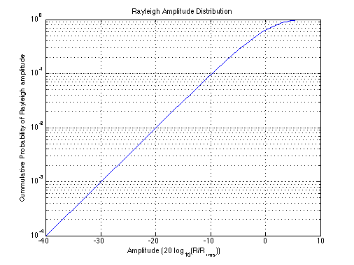

Rayleigh Amplitude Distribution
Copyright 2007 Telecommunications Lab
sigma = 1; r = 0.0001:0.1:40; r_rms = sqrt(2)*sigma; r_dB = 20* log10(r./r_rms); P1 = 1 - exp(-(r.^2/(2*sigma.^2))); semilogy(r_dB, P1); title('Rayleigh Amplitude Distribution') xlabel('Amplitude (20 log_{10}(R/R_{rms}))') axis([-40 10 0.0001 1]) ylabel('Cummulative Probability of Rayleigh amplitude') grid on;